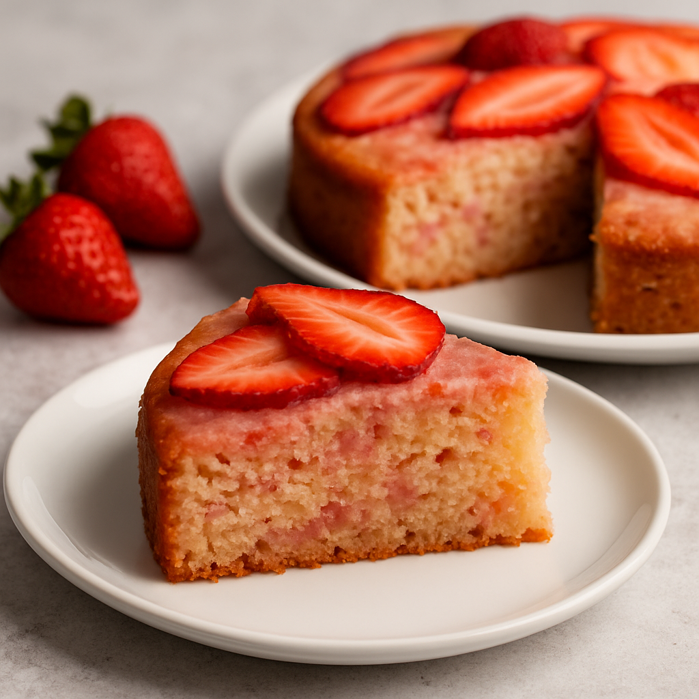

Strawberry Blender Cake

Info
Prep Time:
30 mins
Cook Time:
45 mins
Stand Time:
2 hours
Cool Time:
30 mins
Total Time:
3 hrs 45 mins
Description:
This strawberry blender cake uses a cheater method—making the batter in a blender. You'll then go on to make an
extraordinary strawberry dessert, similar to strawberry shortcake, but with a cake layer that already tastes
like strawberry and has the perfect texture to soak up all the delicious juices.
Ingredients:
Cake
- 1 packed cup sliced strawberries
- 3 large eggs
- 1/3 cup vegetable oil
- 1/2 cup white sugar
- 1 lemon, zested
- 1/2 lemon, juiced
- 1/4 teaspoon vanilla extract
- 2 1/4 cups self-rising flour (see Note)
Strawberries
- 1 pound fresh strawberries, sliced
- 1/2 cup white sugar
Whipped Cream
- 1/2 cup mascarpone
- 1 cup cold heavy cream
- 2 tablespoons confectioners sugar
- 1/4 teaspoon vanilla extract
How to Make the Strawberry Blender Cake
- Preheat the oven to 350 degrees F (180 degrees C). Oil a 9x5-inch loaf pan, and line with parchment, leaving
overhang on the 2 long sides.
- For the cake, add sliced strawberries, eggs, vegetable oil, sugar, lemon zest, lemon juice, and vanilla to
the jar of a blender, and blend on High until mixture is emulsified, 10 to 15 seconds.
- Add flour and blend on High until the flour is thoroughly incorporated, about 30 seconds more. Use a spatula
to scrape down the sides of the blender; blend a bit more if necessary to incorporate all flour.
- Transfer batter into the prepared pan. Tap the pan on a towel to settle the batter.
- Bake in the preheated oven until a skewer inserted near the center comes out clean, about 45 minutes. Let
cool completely, then remove from the pan.
- For strawberries, add sliced berries to a bowl and cover with sugar. Mix briefly, cover, and let sit for 30
minutes. Stir thoroughly with a spoon, and let sit another 30 minutes. Repeat this process twice more, or
until the berries have produced as much juice as you like. Wrap and refrigerate until needed.
- For whipped topping, add mascarpone, sugar, and vanilla to a mixing bowl, and beat with an electric mixer
for 20 seconds to loosen and soften the cheese. Add in the cream, and continue to beat until medium-stiff
peaks form.
- To assemble, slice cake into 1-inch slices (about 8). Place a slice in a shallow serving bowl, and spoon
berry juices over cake until saturated. Add a spoonful of berries, then a generous dollop of whipped cream,
and more berries and juice as desired.
Nutrition Facts (per serve)
Calories:
611
Fat:
35g
Carbs:
69g
Protein:
10g